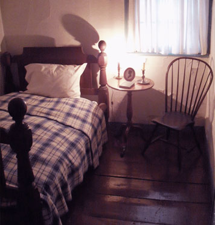

The Places You'll Go!
Edger Allen Poe Cottage
|  |
Cost:
|
||||||||||||
|
edgar Allan Poe spent the last years of his life, from 1846 to 1849, in The Bronx at Poe Cottage, now located at Kingsbridge Road and the Grand Concourse. A small wooden farmhouse built about 1812, the cottage once commanded unobstructed vistas over the rolling Bronx hills to the shores of Long Island. It was a bucolic setting in which the great writer penned many of his most enduring poetical works, including “Annabel Lee,” “The Bells” and “Eureka.” Poe spent much of his life moving from place to place in restless search of literary recognition and financial security. In April 1844, he and his wife, Virginia, and mother-in-law, Maria Clemm, moved to New York, where Poe sought the opportunity for international acclaim. But Virginia was ill, and in early summer of 1846 Poe brought her to The Bronx, where he hoped the country air would rescue her failing health. However, in January of 1847, she died of tuberculosis. Poe himself died two years later, under mysterious circumstances, in Baltimore, MD. |
|||||||||||||